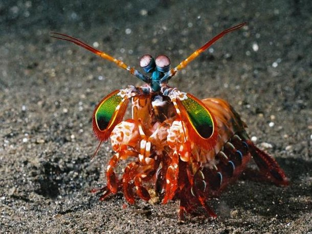
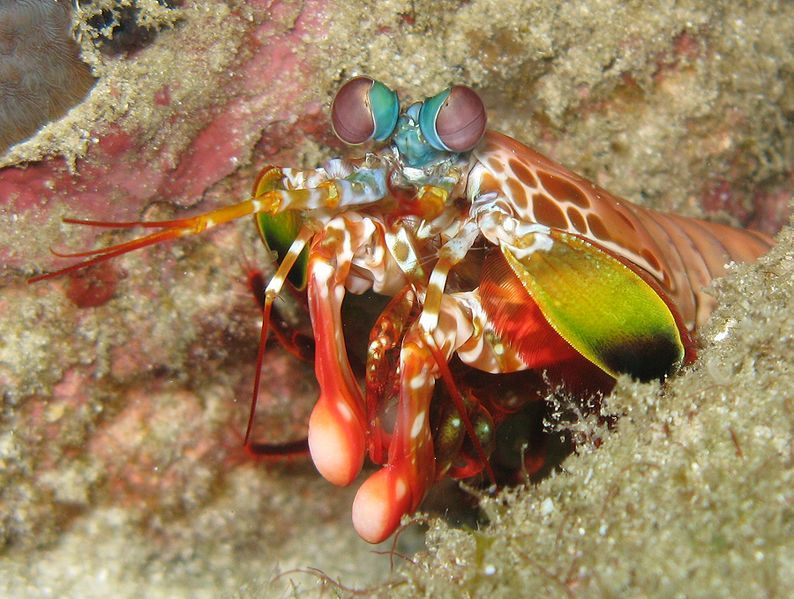

Fatos sobre o Stomatopoda
Conhecendo o Stomatopoda
O Odontodactylus scyllarus, nome científico do Stomatopoda (ou estomatópode), também conhecido por tamarutacas ou lacraias-do-mar no Brasil, é uma ordem de crustáceos marinhos da subclasse Hoplocarida, que agrupa cerca de 400 espécies, caracterizadas principalmente pela morfologia da segunda pata torácica, que é modificada em apêndice subquelado, lembrando uma pata de louva-a-deus.
Estomatópodes podem ser encontrados em quase todo o litoral brasileiro, mas não são animais fáceis de se observar pelos seus hábitos mais furtivos. Devem ser manuseados com muita cautela pois são animais preparados para se defender com força, caso sejam incomodados.
Visão Além do Alcance!

Os estomatópodes têm a visão mais complexa do reino animal, superando até a das borboletas . O camarão mantis tem olhos compostos montados em talos e pode girá-los independentemente um do outro para examinar seus arredores. Enquanto os humanos têm três tipos de fotorreceptores, os olhos do camarão mantis têm entre 12 e 16 tipos de células fotorreceptoras. Algumas espécies podem até ajustar a sensibilidade de sua visão de cores.
Os olhos do camarão mantis estão montados em dois talos móveis, permitindo que os olhos se movam de forma independente. Os olhos do crustáceo estão entre os olhos mais complexos de qualquer animal, com o camarão tendo a capacidade de discernir imagens multiespectrais e luz polarizada.
Golpe Ninja
A stomatopoda ou lacraia-do-mar pode perfurar com a força de uma bala. Ela possui um dos socos mais rápidos e mais poderosos da natureza, podendo esse soco chegar a uma velocidade de 80km/h.
Essas patinhas se movem tão depressa que a água próxima a elas chega a ferver — em um fenômeno chamado supercavitação —, além de provocar uma onda de choque capaz de matar a presa mesmo que a lagosta maldita erre o golpe. Assim, com esse movimento ninja, as tamarutacas assassinam outros animais, despedaçando os coitados, mesmo que contem com carapaças protetoras.